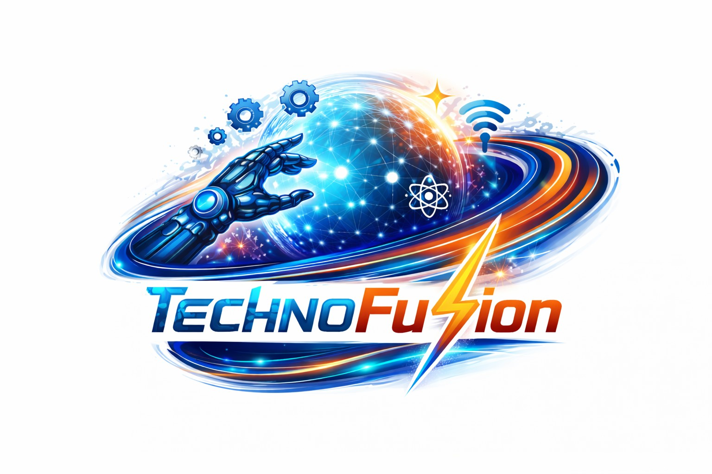

Team / ROBO SAHAYAK
Meet TECHNO FUSION.
Technology that helps • Robotics that cares
The team behind RoboSahayak.
Team member names and individual roles remain editable placeholders until the official team list is supplied.
TEAM IDENTITY

Official TECHNO FUSION logo supplied for the project website.
PROJECT IDENTITY

RoboSahayak × TECHNO FUSION
RoboSahayak is the assistive robotics project; TECHNO FUSION is the team identity behind it.
PROJECT SHOWCASE
RoboSahayak in action.
A project showcase video from TECHNO FUSION.
TEAM CONTRIBUTION
The people behind the project.
Meet the members of TECHNO FUSION and their contributions to Smart Assistive Multi Mode Robot.
Sarthak Kumar Sharma
The golden key card, worm researcher and an all-rounder—
Aryan Goswami
Expert—
Saurya
Assistant in every field—
09 / Team Journey
Built through iteration.
From electronics and code to a working assistive robotics concept.
RESEARCHDefine the assistance problem.
BUILDIntegrate controller, sensors, motors and arm.
CONTROLConnect glove and mobile interaction.
TESTValidate movement, sensing and interaction.